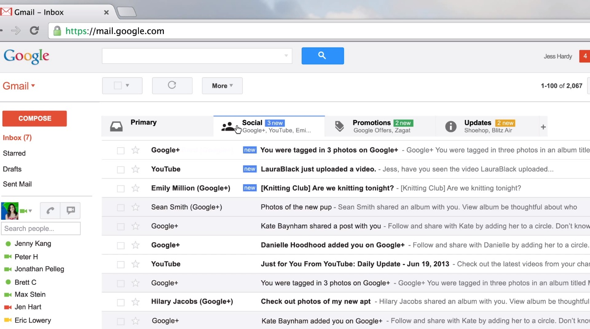

Desarrollo web orientado a API's y Microservicios
Un enfoque moderno
Clase 6
Diego Acuña Rozas
Ing. Civil en Informática - UTFSM
diego.acuna@mailbox.org
Clase de hoy
Vamos a hablar del Frontend:
- Aspectos básicos y tecnologías disponibles
- Single Page Apps
-
AngularJS
- Conceptos claves
- Controllers, Factories
- Resources
- Consultas y Comentarios
FRONTEND
Hasta ahora hemos trabajado solo con el backend de nuestra aplicación. Es decir, hemos construído una API que es capaz de procesar y responder peticiones provenientes de un cliente y en su mayoría en formato JSON.
Ahora nos concentraremos en el frontend, es decir, en desarrollar ese "cliente" que hace peticiones a la API
¿Qué entendemos por frontend?
¿Qué entendemos por frontend?
Antes de desarrollar el frontend, pensemos un momento en cual debería ser su función:
- Realizar y recibir peticiones a nuestra API
- Permitir que un usuario o otro cliente "utilice" nuestra app
- Es la cara visible de nuestra app
- ¿Realizar algún tipo de procesamiento de datos?
Tradicionalmente está asociado a interfaces gráficas y diseño web.
Tecnologías disponibles
Antiguamente desarrollariamos el backend y el frontend de manera acoplada. El mismo framework para el backend nos entregaba herramientas para construir nuestras vistas utilizando html/js/css (ejemplo: erb, haml, Twig, Thymeleaf, etc.). Ahora:
- El backend está completamente separado del frontend. Ya no son necesarias dichas librerías.
-
¿Qué tenemos disponible?
- HTML/CSS
-
Javascript y sus derivados:
- Coffeescript
- Typescript
- elm lang
- Dart
- etc...
Tecnologías disponibles
Hoy el desarrollo de frontend dispone de una gran cantidad de herramientas. Existen una infinidad de librerías y de lenguajes. Todos tienen sus ventajas y desventajas y dependerá del desarrollador evaluar cual se integra mejor con sus objetivos de desarrollo en su aplicación.
Nosotros nos apegaremos a las tecnologías más tradicionales y mayormente utilizaremos:
- HTML
- CSS
- Javascript + librerías
Single-Page App
Antes de continuar, hablaremos de un concepto muy popular hoy en día en el desarrollo frontend. Con el auge de las API's REST y del desacoplamiento completo entre backend y frontend, surge el concepto de Single-Page App. ¿Qué define a una Single-Page App?
- Sitio web "de una sola página". Existe solo un index.html
- El contenido se va cargando de manera dinámica según la página lo requiera
- En ningún momento se carga otra página (en el sentido del navegador)
- Para el usuario es una experiencia más fluída y dinámica
Gracias a las nuevas tecnologías y API's de HTML que han implementado los navegadores, es posible construir Single-Page App de alta calidad...
Single-Page App: Ejemplo
Single-Page App: Ejemplo ¿real?
AngularJS
Si bien (como ya se explicó) existen una gran cantidad de tecnologías disponibles para el desarrollo del frontend y de Single-Page Apps, nosotros vamos a utilizar en esta clase AngularJS:
- Desarrollada por google
- Las interfaces son declarativas: mostrar o no mostrar algo según alguna condición, recorrer un listado e imprimir un atributo, etc.
- La lógica del negocio es imperativa: escribimos código en javascript que evalúa y ejecuta la lógica que deseemos.
Veamos algunos conceptos claves de la librería...
AngularJS: Two Way Data Binding
Por lejos, el concepto más importante en AngularJS y en Single-Page Apps. Veamos primero como funcionan los sistemas de template tradicionales:

Concepto clave: cambios en la vista no gatillan cambios en el modelo y cambios en el modelo no gatillan cambios en la vista. Veamos un ejemplo...
One Way Data Binding: Ejemplo
El archivo está en ejemplos/one-way-binding/one-binding.html
AngularJS: Two Way Data Binding
Tener one way data binding no es muy útil. Requiere mucho trabajo el tener que mantener el modelo y la vista actualizadas. Veamos una manera simple de arreglar nuestro ejemplo:
El archivo está en ejemplos/one-way-binding/one-binding-to-two-binding.html
AngularJS: Two Way Data Binding
Es costoso escribir el código para mantener nuestros modelos y vistas sincronizados. Por suerte AngularJS nos provee de un mecanismo sencillo de utilizar. Posee Two Way Data Binding implementado por defecto en la librería:

La idea es similar a lo expuesto. Mantener la vista y el modelo sincronizados.
Explorando AngularJS
Veamos un poco de código con AngularJS. Vamos a generar una aplicación utilizando un generador de yeoman (ver clase anterior):
npm install -g grunt-cli bower yo generator-karma generator-angular
Luego:
mkdir angular-blog-frontend
cd angular-blog-frontend
yo angular angular-blog
Vamos a generar un frontend para nuestra API de nuestro blog que construímos en rails. Para ejecutar la aplicación:
grunt server
grunt server
Explorando AngularJS
En general, existen 4 componentes claves en una aplicación AngularJS:
- app.js: archivo de configuración de nuestra aplicación. Aquí se configuran los módulos y parámetros importantes de la app.
- Controladores: la lógica del negocio de las vistas la almacenamos en controladores. En general una vista/fragmento será manejada por un controlador (dependiendo de su complejidad).
- Vistas: plantillas html declarativas. Se conectan con los controladores y poseen two way data binding con las variables que se definen tanto en las vistas como en los controladores.
- Rutas: indican las acciones (url's) de nuestra aplicación. A través de las rutas le indicamos a AngularJS que debe mostrar en cada página.
Modificando el main
Hagamos un experimento sencillo, modifiquemos la vista inicial de nuestra aplicación. Veamos el archivo app.js:
'use strict';
angular
.module('angularBlogApp', [
'ngAnimate',
'ngCookies',
'ngResource',
'ngRoute',
'ngSanitize',
'ngTouch'
])
.config(function ($routeProvider) {
$routeProvider
.when('/', {
templateUrl: 'views/main.html',
controller: 'MainCtrl',
controllerAs: 'main'
})
.when('/about', {
templateUrl: 'views/about.html',
controller: 'AboutCtrl',
controllerAs: 'about'
})
.otherwise({
redirectTo: '/'
});
});
Las rutas están definidas en el mismo archivo app.js ($routeProvider). Atención en la ruta '/' (main).
Ruta '/' Main
En el routing vemos que la vista está en views/main.html y el controlador es MainCtrl. Modifiquemos tanto el controlador como la vista para imprimir algo y ver en acción el two way data binding de angular:
Controlador:
angular.module('angularBlogApp')
.controller('MainCtrl', function ($scope) {
$scope.nombre = "Diego";
});
Bienvenid@, {{nombre}}
¿Quieres cambiar el nombre? Utiliza el formulario de abajo!
Explorando AngularJS
Explorando AngularJS - $scope
El objeto $scope que utilizamos en el controlador es una variable especial en Angular. Cualquier atributo que agreguemos en dicho objeto estará disponible en la vista. Si no agregamos el atributo al $scope entonces no lo podremos utilizar en la vista.
Por defecto, los atributos del $scope poseen two way data binding. Podemos agregar lo que queramos al $scope
$scope.nombres = ["Juan", "Pedro", "Diego", "Maria"];
O elige alguno de los nombres que tenemos disponibles:
- {{nombre}}
Explorando AngularJS - $scope
Ya vimos como funcionaba el data binding cambiando un valor en la vista (automáticamente se actualizaba el modelo). Veamos como funciona desde el controlador:
angular.module('angularBlogApp')
.controller('MainCtrl', function ($scope) {
$scope.nombre = "Diego";
$scope.nombres = ["Juan", "Pedro", "Diego", "Maria"];
$scope.cambiarNombre = function(nombre) {
$scope.nombre = nombre;
};
});
Definimos una función que recibe un nombre por parámetro y cambia el modelo nombre al parámetro recibido. IMPORTANTE: si queremos llamar a está función desde la vista entonces debemos asignarla al $scope. Recuerden, al $scope le podemos agregar lo que queramos.
Explorando AngularJS - $scope
Y en la vista:
Bienvenid@, {{nombre}}
¿Quieres cambiar el nombre? Utiliza el formulario de abajo!
O elige alguno de los nombres que tenemos disponibles:
Veamos como se ve...
Explorando AngularJS - $scope
AngularJS - Llamando a nuestra API
Ya estamos preparados para interactuar con nuestra API en rails. Vamos a partir listando los post de nuestro blog en nuestra página principal. Para esto, vamos a utilizar angular-resource el cual ya viene integrado en nuestro proyecto (gracias a yeoman):
angular.module('angularBlogApp')
.controller('MainCtrl', function ($scope, $resource) {
$scope.nombre = "Diego";
$scope.nombres = ["Juan", "Pedro", "Diego", "Maria"];
//definimos nuestro recurso, este es un endpoint a los post de nuestra API
var Post = $resource('http://localhost:3000/posts/:postId', {postId:'@id'});
$scope.cambiarNombre = function(nombre) {
$scope.nombre = nombre;
};
//cualquier codigo que pongamos directamente en el controlador sera ejecutado al iniciar la vista
//la funcion query llama a '/posts' y trae todos los posts
$scope.posts = Post.query();
});
AngularJS - Llamando a nuestra API - CORS
Si ejecutan el código anterior, verán un error en la consola de google chrome similar a:
Esta restricción proviene de un mecanismo de manejo de recursos web denominado CORS. En resumen, los navegadores bloquean las solicitudes a recursos en otros dominios (o puertos) que el host de origen.
Para solucionarlo, necesitamos modificar nuestro backend...
AngularJS - Llamando a nuestra API - CORS
En rails, se debe modificar el archivo app/controllers/application_controller.rb:
class ApplicationController < ActionController::Base
protect_from_forgery with: :null_session
before_filter :add_allow_credentials_headers
def add_allow_credentials_headers
# https://developer.mozilla.org/en-US/docs/Web/HTTP/Access_control_CORS#section_5
#
# Because we want our front-end to send cookies to allow the API to be authenticated
# (using 'withCredentials' in the XMLHttpRequest), we need to add some headers so
# the browser will not reject the response
response.headers['Access-Control-Allow-Origin'] = request.headers['Origin'] || '*'
response.headers['Access-Control-Allow-Credentials'] = 'true'
end
def options
head :status => 200, :'Access-Control-Allow-Headers' => 'accept, content-type'
end
end
y además debemos configurar nuestra aplicación de angular...
AngularJS - Llamando a nuestra API - CORS
Debemos modificar el archivo app/scripts/app.js:
...
.config(['$httpProvider', function($httpProvider) {
$httpProvider.defaults.useXDomain = true;
$httpProvider.defaults.withCredentials = true;
delete $httpProvider.defaults.headers.common["X-Requested-With"];
$httpProvider.defaults.headers.common["Accept"] = "application/json";
$httpProvider.defaults.headers.common["Content-Type"] = "application/json";
}
]);
Dicho código debe ser agregado al final del archivo. Si se corre nuevamente el backend y recargamos el frontend entonces ya no aparecerá el error.
Volvamos a la construcción de nuestro frontend.
AngularJS - Listar los posts
Ya tenemos en el $scope una variable posts con los post cargados desde el backend. Ahora, los vamos a listar en la página principal. La vista:
Bienvenid@ al blog
Subtítulo de nuestro blog

{{post.title}}
Por: {{post.autor}},
{{post.content}}
Comentarios ({{post.comments.length}}) |
Última actualización:
AngularJS - Listar los posts
Y se ve así:
AngularJS - Routing - Ver un post
Para aprender más del routing, creemos una página para ver un post. Primero utilizando el generador creemos el controlador:
yo angular:route showPost
Genera un archivo app/scripts/controllers/showpost.js, una vista en app/views/showpost.html y agrega en el archivo app/scripts/app.js una ruta para la acción showpost:
...
.when('/showPost', {
templateUrl: 'views/showpost.html',
controller: 'ShowpostCtrl',
controllerAs: 'showPost'
})
...
Vamos a cambiar algunas cosas para que los nombres queden más limpios...
AngularJS - Ver un post
La ruta:
...
.when('/posts/:post_id', {
templateUrl: 'views/showpost.html',
controller: 'ShowPostCtrl',
controllerAs: 'showPost'
})
...
Controlador:
angular.module('angularBlogApp')
.controller('ShowPostCtrl', function () {
});
Ahora, vamos a crear el enlace en nuestro listado de posts...
AngularJS - Ver un post
Para crear un enlace utilizamos ng-href:

{{post.title}}
Por: {{post.autor}},
{{post.content}}
Comentarios ({{post.comments.length}}) |
Última actualización:
Por ahora, podemos hacer click en el enlace y nos llevará al controlador ShowPostCtrl y a la vista correspondiente.
AngularJS - Ver un post - Controlador
El controlador es bastante simple. Podemos acceder a los parámetros de la url mediante el objeto $routeParams:
angular.module('angularBlogApp')
.controller('ShowPostCtrl', function ($scope, $resource, $routeParams) {
var Post = $resource('http://localhost:3000/posts/:postId', {postId:'@id'});
Post.get({postId: $routeParams.post_id}, function(post) {
$scope.post = post;
});
});
Ahora construyamos una vista más decente en app/views/showpost.html...
AngularJS - Ver un post - Vista
{{post.title}}
Por: {{post.autor}},
{{post.content}}
Comentarios ({{post.comments.length}})

{{comment.title}}
{{comment.content}}
Y si entramos ahora al post, lo veremos así...
AngularJS - Ver un post - Vista
Comentarios
- Con lo visto ya pueden comenzar a interiorizarse más en AngularJS. Algunos conceptos más avanzados: services, factories y directives.
-
Algunas librerías muy útiles:
- Restangular: muy buen reemplazo a $resource (de verdad muy bueno!)
- ui-router: reemplazo al sistema base de routing de Angular (también muy bueno!).
- angular-bootstrap: las funcionalidades javascript de bootstrap integradas a AngularJS.
- Aprendan a utilizar bootstrap, principalmente su grid system, les ahorrará mucho trabajo en la construcción estética del frontend.
Tareas
- Construyan una vista/controlador para crear un post: deberán estudiar como guardar un modelo utilizando $resource y como trabajar con formularios en Angular.
- Construyan una vista de edición para un post: deberán estudiar como actualizar un modelo utilizando $resource y como trabajar con formularios en Angular.
- Construyan un enlace para eliminar un post.
- Funcionalidad para agregar comentarios.